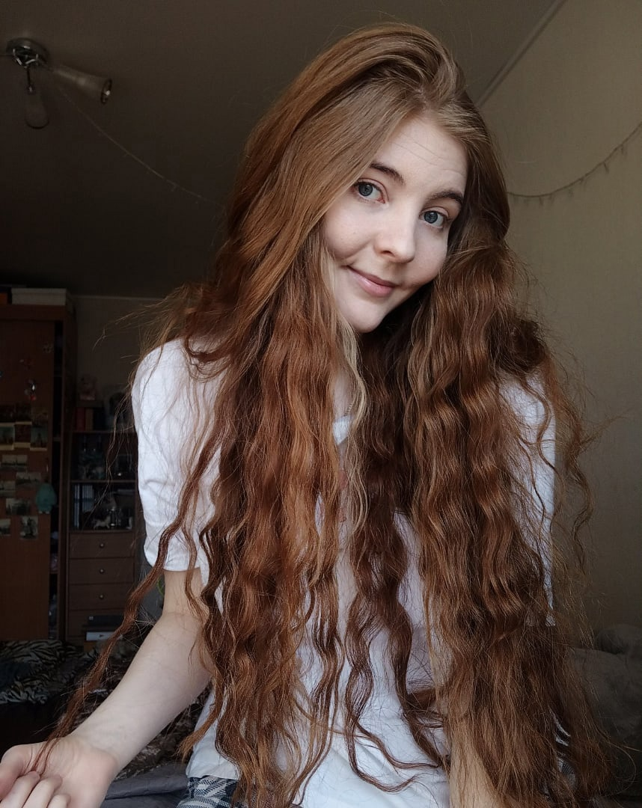
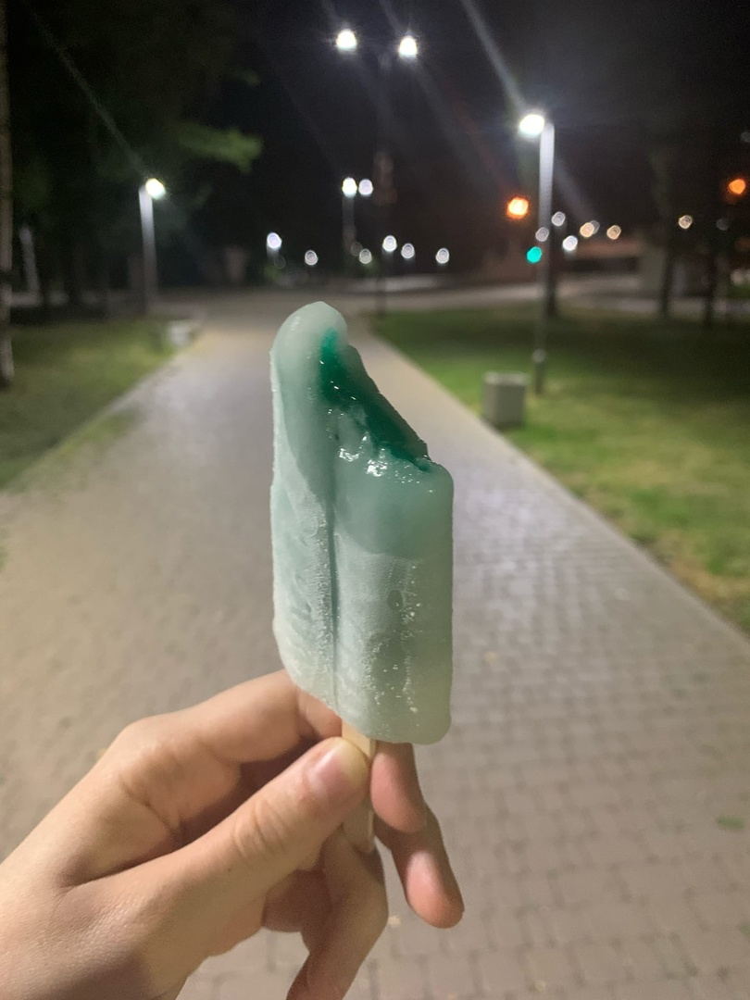
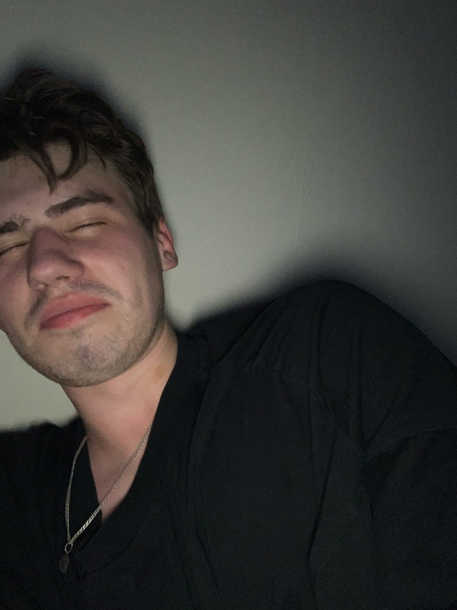
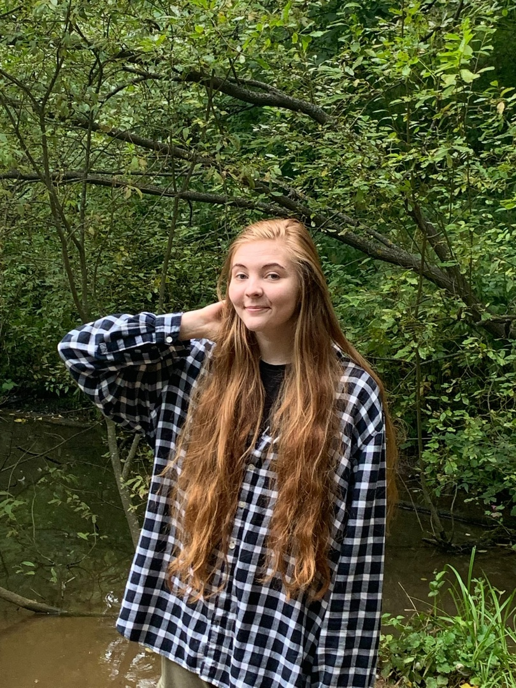
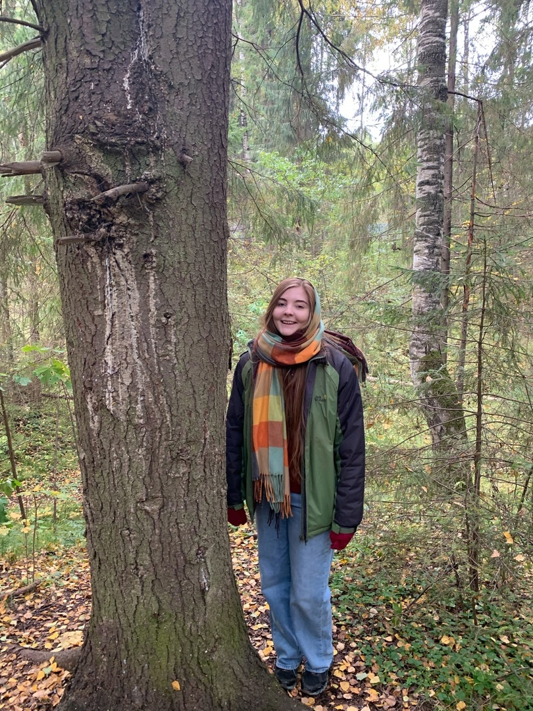
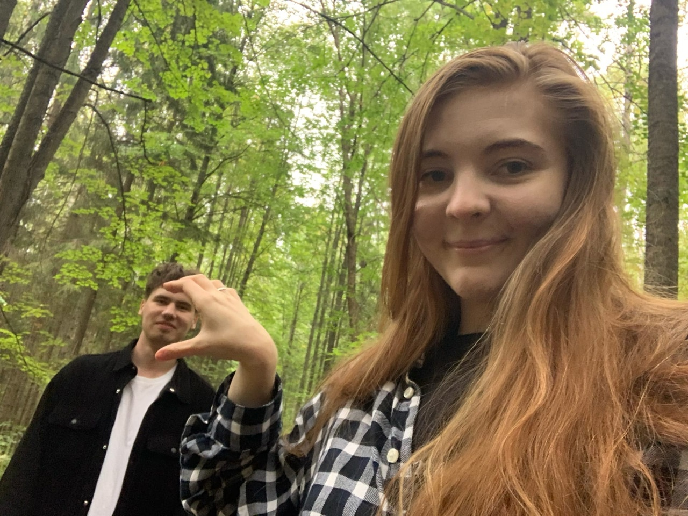
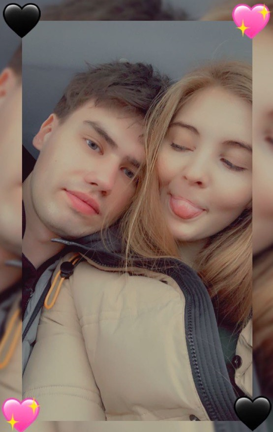

Любимая Глазунька, с твоим днем тебя
8м Марта!!
8м Марта!!

Хочу немного наши с тобой моменты
снова пережить здесь, я надеюсь тебе тоже будет приятно это
все вспомнить.
Все началось 12 августа, мы с тобой уже недавно годовщину пережили полгода, кто бы из нас тогда понимал, что мы с тобой такой срок пройдем.
Пришел на этот ваш выкуп, кругом одни кашолки некрасивые ходят, пока не заметил девочку в далеке, что-то высматривающую с интересом. В течение дня думал о ней постоянно. Наш с тобой танец, Глазунь, не забуду, как тот в момент я быо счатслив твоему согласию мне. Все что ты там услышала было искренне и чистейшей правдой. Наша с тобой прогулка домой, как все было ахуенно, только ты, я, прохлданый летний вечер, наши руки. То что было у подъезда не передать адекватными словами, мне просто было комфортнео с тобой и все. Чувство, будто человек просто мой родной, близкий по всему. Сидел и мечтал, чтобы этот вечер не кончался.
Все началось 12 августа, мы с тобой уже недавно годовщину пережили полгода, кто бы из нас тогда понимал, что мы с тобой такой срок пройдем.
Пришел на этот ваш выкуп, кругом одни кашолки некрасивые ходят, пока не заметил девочку в далеке, что-то высматривающую с интересом. В течение дня думал о ней постоянно. Наш с тобой танец, Глазунь, не забуду, как тот в момент я быо счатслив твоему согласию мне. Все что ты там услышала было искренне и чистейшей правдой. Наша с тобой прогулка домой, как все было ахуенно, только ты, я, прохлданый летний вечер, наши руки. То что было у подъезда не передать адекватными словами, мне просто было комфортнео с тобой и все. Чувство, будто человек просто мой родной, близкий по всему. Сидел и мечтал, чтобы этот вечер не кончался.

Естественно, Глазунь, куда без наших с тобой вечерних прогулочек.
Я обожаю то время, каждый теплый вечер. Я тебя все еще хочу затащить на самокаты мелкую
вредину. Безумно приятно было с тобой быть в это время, сидеть под звездами, болтать о разном,
в основном о нас конечно, но это было приятно все равно, не думать что и как, не планировать встречи,
а просто написать тебе. Глазунь, пойдем гулять вечером, и мы уже с тобой в парке победы идем, кушаем
мороженки. Первые ночовки с тобой у тебя в квартире, когда ты мне показываешь свои стихи, свои фоточки,
открываешься мне по немногу. Очень хочу до сих пор тебя позвоновать, ты безграничный человек, мне и 10 лет
будет мало, что бы тебя изучить, ты особенная, зай.

Отдельно хотелось бы вспомнить самое волшебное и знаковое место для нас ээээто
ДЕНДРОПАРК🌳. Думаю ты осознаешь на сколько это стало нашим местом.
Наша с тобой легендарная уже локация, где, как я считаю, должен был состояться наш первый
поцелуй. до сих пор помню это мое первое знакомство с этим местом. Мы с тобой идем вдвоем,
еще особо не зная друг друга. Дикое стеснение у тебя и огромная неуверенность у меня, потому
что я напомню ты моя первая настоящая искренняя любовь, бельчонок. Все эти психи твои, когда
выключили свет, в тот момент я правда растерялся, потому что перед мной стоит безумно привлекательная
девушка, которая ждет от меня действий, а я даже целоваться не умею. Я так переживал перед этим вечером.
Пересмотрел много видео о том, как целоваться, как языком двигать, что там с губами
делать. Но в парке не поцеловал, но твоя мотивационная речь очень меня сильно воодушевила, ну еще
Егор Крид, которого мы слушали на обратном пути, тоже дал мне мотивации и решительности к действию.
Я решился надо ее... Чмокнуть.


Чмокнуть блять, глазунь, не поцеловать, а просто губами тебя каснуться, в
каком я был шоке был, ты наверное можешь представить, что вместо неловокго поцелуйчика, мы начали целоваться
страстно и долго, твои постанывания от этого, в тот момент я думал только, это все не по настоящему, почему
она стонет от этого, я не могу делать это так хорошо, она замужем, наверняка знает, как это делается нормально,
тогда почему на меня такая реакция. Но я остался этим вечером безумно доволен. Отдельная наша сцена на мосту, я
уже мечтаю повторить это и мы повторим. Наши с тобой осенние прогулочки, где я с одной милой белочкой смотрю за
другими наглыми суками, которые тоже называются белочками, как мы гуляем с тобой по желтым тропинкам, от падающих
листьев. Это уже навсегда в моих мыслях, в моем сердечке. Это безумно все романтично и прекрасно в первую очередь,
потому тчо это с тобой, ты глазунь это настроение задаешь, ты побуждаешь на все эти романтичные поступки. Ты не просила,
не заставляла, все шло само из нутри меня, потому что я с тобой там и это прекрасно.
Штоооооош, не спеши меня называть уебаном, который тебя заствил тысячу букв читать, это финальный блок. Хотелось тебе
немного поднять настроение в такой день, всякие моменты вспоминить и немного понесло. Что я хочу тебе в такой день пожелать.
Во-первых, Глазунь, я тебе желаю продолжать цвести, ты можешь мне тысячу раз написать, что ты некрасивая, что поправилась и
прочая ерунда, которая в твоей голове рождается. За полгода ты пиздец какие-то обороты набираешь в жественной красоте. Я думал,
ну все встертил уже мега прилекательную лакшери телочку, оказывается это даже не половина от того, какой ты являешься сейчас.
Во-вторых, хочу чтобы ты любила себя, ценила свое внимание людям, потому что оно слишком дорогое, чтобы его растрачивать на людей, если ты его даешь, человек грубо говоря в лотерею выиграл.
Ну и в третьих, желаю, чтобы все говно, которое сейчас вокруг тебя, скорее ушло, не мешало достигать твоей мечты о идеальной семье, я буду тебе помогать это все разгребать, потому что ты мне открылась, доверилась, для меня это важно очень. В общем, Глазунь, с 8м марта тебя🌹. Я безумно тебя люблю. Пару фоточек прилеплю наших, их не так много, чтобы тут огрмную стену из них построить, но это вопрос времени...
Во-вторых, хочу чтобы ты любила себя, ценила свое внимание людям, потому что оно слишком дорогое, чтобы его растрачивать на людей, если ты его даешь, человек грубо говоря в лотерею выиграл.
Ну и в третьих, желаю, чтобы все говно, которое сейчас вокруг тебя, скорее ушло, не мешало достигать твоей мечты о идеальной семье, я буду тебе помогать это все разгребать, потому что ты мне открылась, доверилась, для меня это важно очень. В общем, Глазунь, с 8м марта тебя🌹. Я безумно тебя люблю. Пару фоточек прилеплю наших, их не так много, чтобы тут огрмную стену из них построить, но это вопрос времени...


.jpg)

